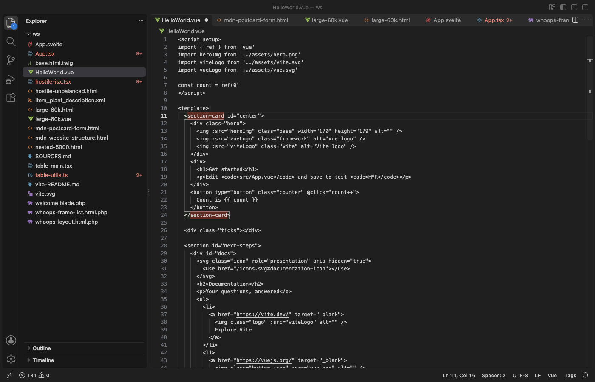

Tag Auto Rename & Close Tag Sync (Matching Tag Highlight, JSX, Vue)
Tag Auto Rename & Close Tag Sync (Matching Tag Highlight, JSX, Vue), a VS Code extension by Zovo
Rename a tag and its matching tag changes as you type. Type > and the closing tag is there. One undo brings everything back. Works in HTML, JSX and TSX, Vue, Svelte, Astro, PHP, Blade, Twig, Jinja, ERB, Handlebars, XML, SVG and Markdown. Free, no sign-in, works offline.
Free, MIT license. Needs VS Code 1.90.0 or newer. Extension ID zovo.zovo-auto-rename-tag, version 0.1.0.

Questions people ask
Is Tag Auto Rename & Close Tag Sync (Matching Tag Highlight, JSX, Vue) free?
Yes. Tag Auto Rename & Close Tag Sync (Matching Tag Highlight, JSX, Vue) is free and MIT licensed.
How do I install Tag Auto Rename & Close Tag Sync (Matching Tag Highlight, JSX, Vue)?
Click "Install in VS Code" above, or search for zovo.zovo-auto-rename-tag in the Extensions view.
Why this one
The most installed tag rename, tag close and matching tag extensions have public reviews about the same few problems (links below; quotes are from those pages). This one is a different extension, built around them:
| Problem people report | What this extension does |
|---|---|
| "This will destroy your undo stack", "can corrupt your UNDO stack" (reviews, issue 55) | Rename uses VS Code's own linked editing, so your edit and the matching tag are one undo step. The closing tag joins the same undo step as the > you typed (HTML, Vue, Svelte, PHP, Blade, Twig, XML, Markdown and the rest). |
<br> turned into <br></br>, Observable<boolean> turned into Observable<boolean></boolean> (rename reviews, close reviews) | Void tags (br, img, input, meta, hr and the rest) never pair and are never closed. .ts files are left alone, and in .tsx only real JSX is a tag: comparisons like a < b && c > d, generics like useState<string>() or <T,> are not. |
| "Doesn't work in JSX", "not working well in mixed PHP and Twig", "doesn't work in a newly created document" (close reviews, rename reviews) | One scanner for HTML, JSX/TSX, Vue, Svelte, Astro, PHP, Blade, Twig/Jinja/Nunjucks/Liquid, ERB/EJS, Handlebars, XML, SVG and Markdown. It skips comments, strings, <script> and <style> bodies, {{ }}, {% %}, <?php ?> and <% %> blocks. New unsaved files work as soon as they have a language. |
| "You won't see what is auto renamed" (reviews) | The matching tag gets a box in your theme's bracket colors whenever the cursor is on a tag. |
"The lag between typing </ and the tag being closed is too big", "VSCode hangs" (reviews) | Closing runs right in the typing event: about 6 ms on a 10,000-line, 700 KB file. Files over 1 MB or 50,000 lines get no live rename or close, and the status bar says so, so typing never waits. |
| Pop-ups and course adverts (reviews) | No ads, no tips, no notifications. The only question it ever asks is for a rating, after you have used it in two sessions, and you can turn that off. |
Features
- Auto rename tag: change
<div>and</div>follows, and the other way round. - Auto close tag: type
<section class="x">and</section>appears after the cursor. Type</and the open element's name is filled in. - Highlight matching tag: a box around both tags of the element under the cursor.
- Go to Matching Tag and Select Tag Content (run it again to select the whole element, then its parent), in the right-click menu and the Command Palette.
- Rename Tag Pair…: type a new name in a box; both tags change in one edit.
- A small Tags item in the status bar shows what is on for the current file. Click it to turn the extension off for one language.

Works with VS Code and your language extensions
- Rename is VS Code's linked editing (
editor.linkedEditing), filled in for every language above. This extension turnseditor.linkedEditingon for those languages. If you turned that setting off yourself, the status bar shows "Tags: rename off"; click it to turn it on for that language. - Close: this extension closes tags in HTML, Vue, Svelte, Astro, PHP, Blade, Twig, Jinja, ERB, Handlebars, XML, SVG and Markdown. In HTML it sets VS Code's
html.autoClosingTagstofalseby default (only while this extension is on), so a tag is never closed twice. In JSX and TSX, TypeScript closes tags itself and knows generics best, so this extension leaves closing to it; there TypeScript's closing tag is its own undo step. When the Vue, Svelte, Astro or Red Hat XML extension is installed, that extension closes tags in its language and this one stays out. - If the older Auto Rename Tag or Auto Close Tag extension is also on, the status bar says so. Two renamers can edit the same tag twice, so keep one of them.
Settings
| Setting | Default | What it does |
|---|---|---|
zovoTags.renameOnType | true | Rename the matching tag as you type |
zovoTags.closeOnType | true | Close tags on > and </ where nothing else does |
zovoTags.highlightMatchingTag | true | Box around the matching tag |
zovoTags.disabledLanguages | [] | Language ids where the extension does nothing, for example ["markdown"] |
zovoTags.additionalHtmlLanguages | [] | More language ids to treat as HTML |
zovoTags.maxFileSizeKB / zovoTags.maxFileLines | 1024 / 50000 | Above these, live rename, close and highlight are off for that file |
zovoTags.showStatusBar | true | The Tags item in the status bar |
zovoTags.askForRating | true | One rating question after real use in two sessions |
Privacy
No network requests, no telemetry, no account. The extension reads only the open file, in memory. Links in the tooltip open a web page only when you click them.
Known limits
- In
.tsx,<T>(x: T) => xin a type and<T extends X>are read as generics, as TypeScript does. A JSX element named with one capital letter right before(is read as a generic too. <?php if ($a): ?><div><?php else: ?><div class="b"><?php endif; ?></div>has two open tags for one closing tag; only the second pairs with it, so renaming the first changes nothing else.- Tags written inside Svelte or Astro
{...}expressions are not renamed.
License
MIT
Guides
Install Tag Auto Rename & Close Tag Sync (Matching Tag Highlight, JSX, Vue)
Click the button to open VS Code and install it, or press Ctrl+P (Cmd+P on macOS) in VS Code and run ext install zovo.zovo-auto-rename-tag.
Free, MIT license. Needs VS Code 1.90.0 or newer. Extension ID zovo.zovo-auto-rename-tag, version 0.1.0.
Source code and issues are on GitHub.
Support this work
If this extension saves you time, you can support the work on GitHub Sponsors. Monthly tiers start at $5, and one-time tiers start at $15. Sponsorship is optional, and the tool works the same without it.